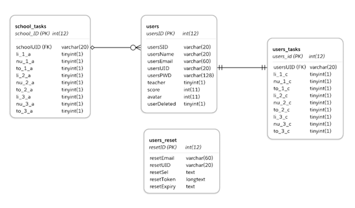
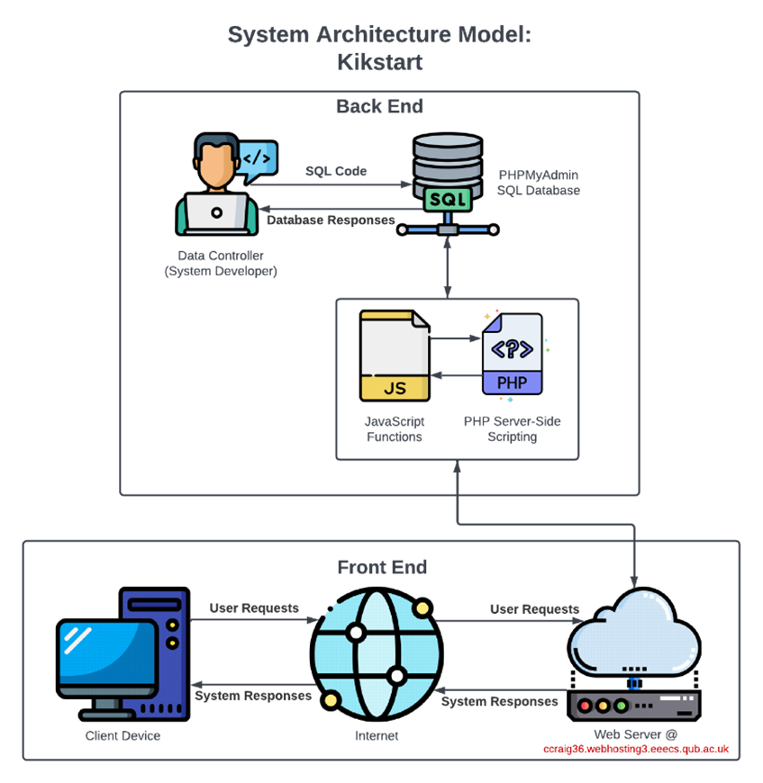
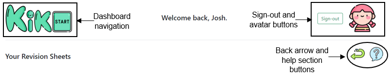
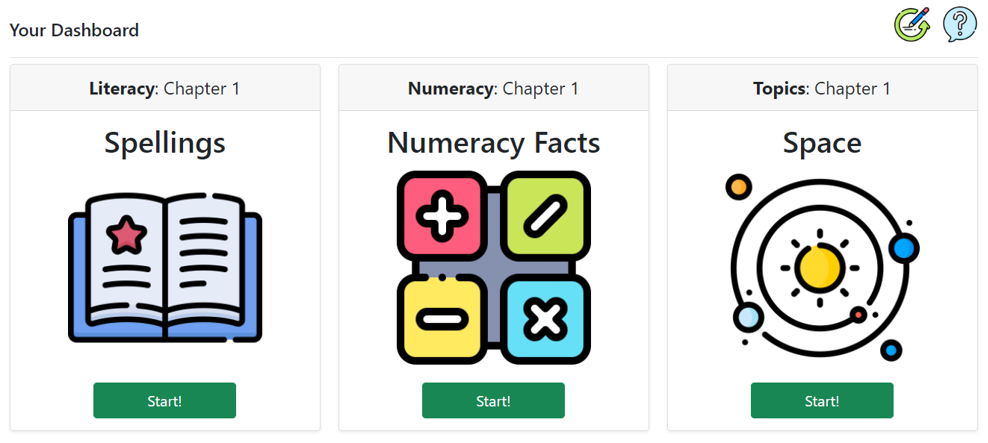

Cameron Craig Computing and Information Technology Graduate
Achieving Attainable Equitable Quality Education in a Post Coronavirus Global Environment
The Coronavirus pandemic of 2020 left a generation of children disadvantaged, particularly those who did not benefit from the facilities to receive an education at home. Development and research were carried out with the intention of creating an approachable learning environment, which could facilitate the education of literacy, mathematics, and the world to children, regardless of global phenomenon. This page summarises some of the key elements of system design that enabled the functionality of Kikstart. The full write-up and source code for this project is available upon request.
Data Design and Model
System functionality was facilitated through a SQL database, which allowed for user requirements to be carried out. Both functional and non-functional requirements were defined. Functional requirements clarified what the system had to achieve, whilst non-functional requirements described desired system qualities. Functional requirements included:
- Remote login and registration
- Classroom management
- Task assignment
- Student score visualisation and updating
- The ability to change user avatars
- Password reset functionalities
System Architecture Model
The system architecture model inaugurates the structure of the solution, and the interaction of elements that took place during system operation. The flow of data and change of data control that took place during system processing is also visualised (data workflow).
System Layout and Design
The system layout comprised of large, stylised icons that would appeal to children using the system. In aid of accessibility, navigation was conducted through these graphics. These interactive hotspots within the system had consistent positioning throughout to the same effect.  Both teachers and students had an interactive dashboard. For students, the tasks shown on their dashboard would update depending on task completion and task assignment. Teachers were responsible for assigning tasks to their students.  It was important to provide clear visual feedback throughout the system, which included:
- Generated alerts
- Answer marking
- Interactable elements increasing size when highlighted
Additional Information
The final solution was able to address all functional and non-functional requirements. The full write-up for this project contains additional information on topics such as:
- Problem domain analysis
- User requirements
- System site map and use case models
- System verification, validation, and testing